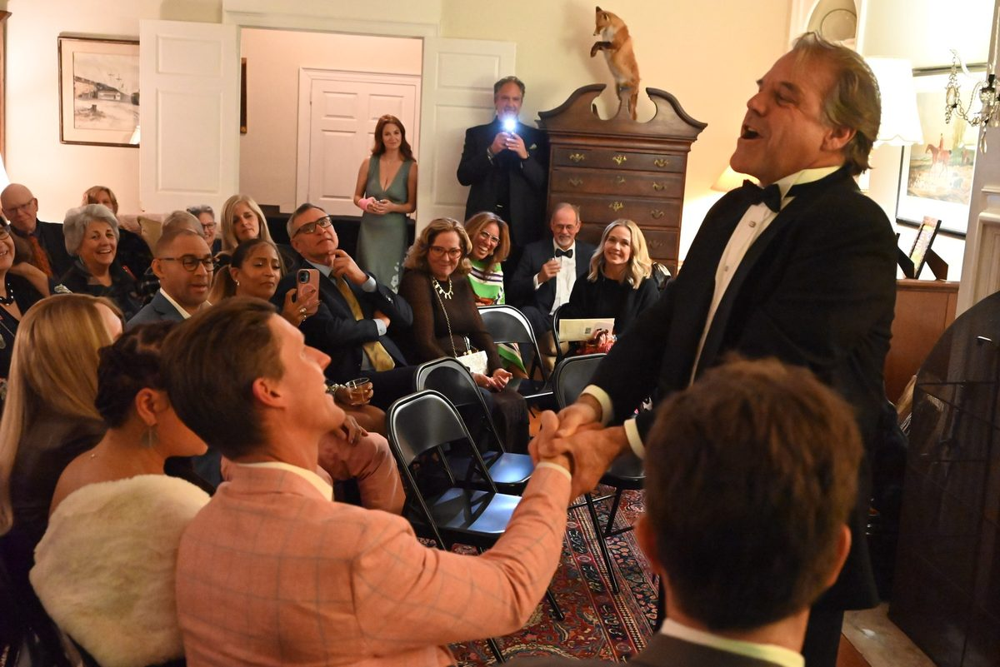
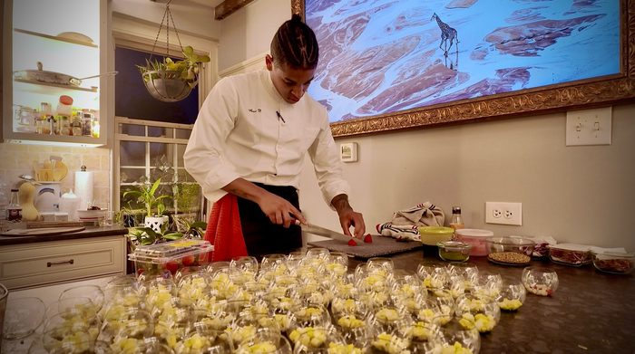
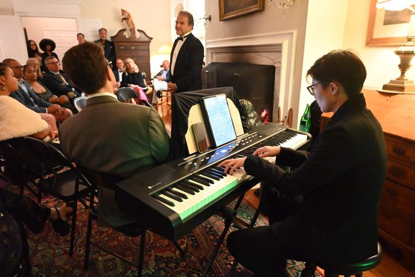
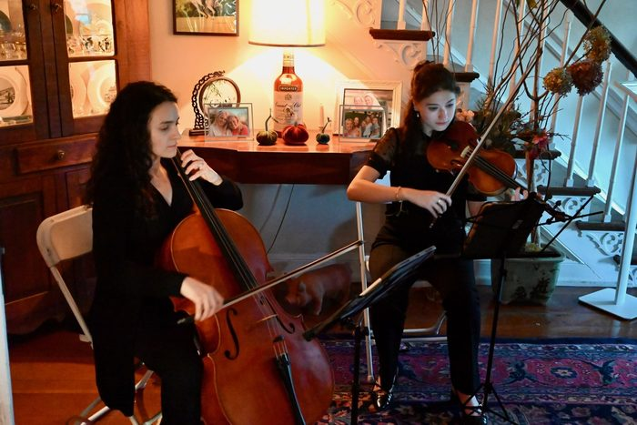
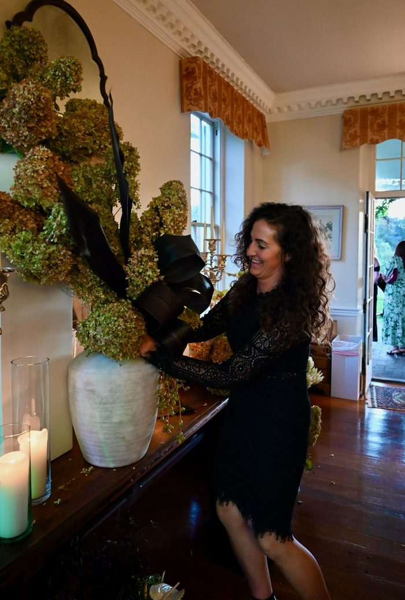
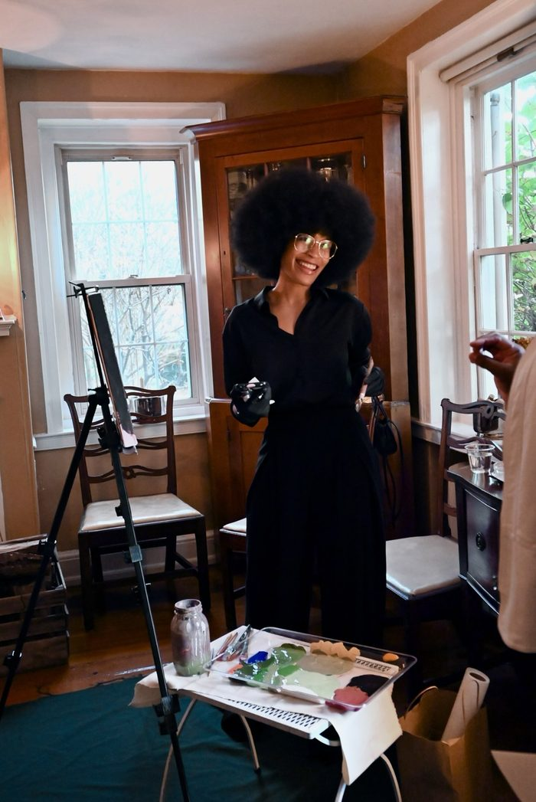
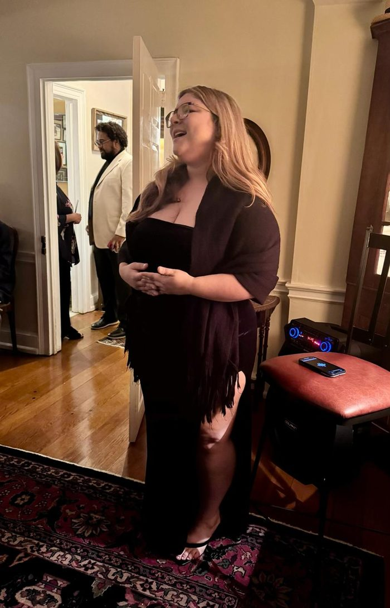
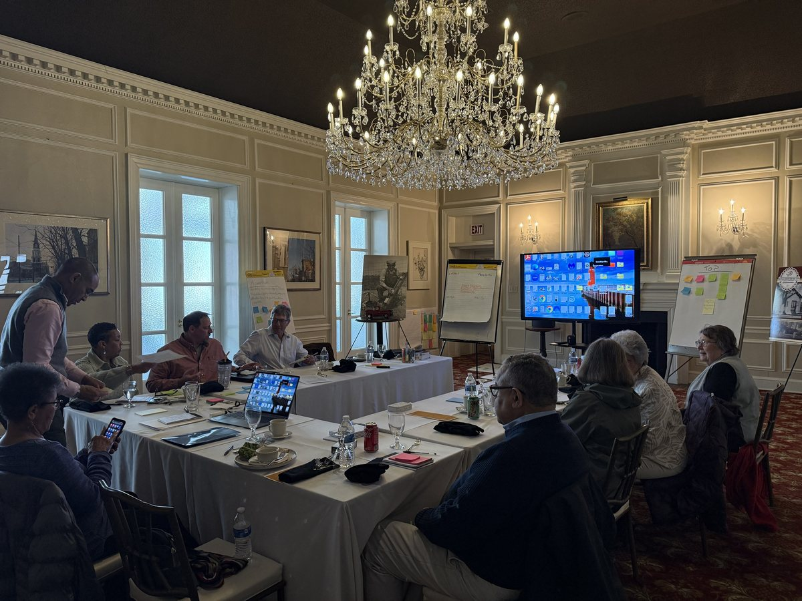
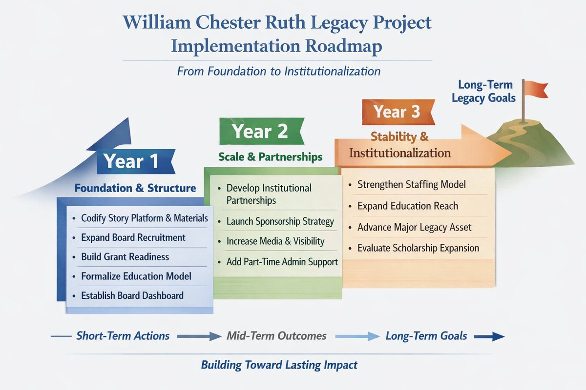

Impact
Where people came together and things moved
Programs, partnerships, and community work across Coatesville, Chester County, and Greater Philadelphia. Filter by kind of work, or open any project for the full story.
Case studies
Showing 10 of 10 projects
-

Chester County OIC
Work Enclave program
A five-week paid program that helps people build skills and connect with local employers through work experience and professional development.
$800Kprogrammatic grant secured with support from the program's results
- Program design
- Resource development
- Partnerships
- Workforce
The full story
- Situation
- The program was designed to help people build skills and connect with local employment through paid work experience and professional development.
- What I did
- Developed and piloted the five-week program, recruited participants, coordinated program relationships, and built the tracking and implementation processes.
- Result
- 50 participants recruited. 60 percent identified as candidates for local jobs with benefits. Those results supported securing an $800,000 programmatic grant.
- Role
- Consultant
-

The Alliance for Health Equity
Tastes of Coatesville
I brought The Alliance for Health Equity's signature fundraiser back home to Coatesville and led it from concept to the final ask: the program, the donor invitations, the artists, the production, and hosting the evening itself.
$50,000raised in one evening with about 100 guests, including roughly half of the Alliance's board
- Fundraising strategy
- Donor cultivation
- Talent curation
- Event production
The full story
- Situation
- The Alliance's long-running Taste of Coatesville had most recently run as Taste of Chesco. The event needed its Coatesville identity back, and a reason for donors to feel connected to the community the Alliance serves.
- What I did
- As Senior Director for Strategic Relationships, I shaped the concept, program, and fundraising strategy; cultivated current and prospective donors; drew on more than 20 years of relationships to bring in the artists and the chef; produced the evening; and hosted it, carrying the Alliance's mission and the ask to the room.
- The program
- Opera tenor Richard Troxell, a Coatesville native and longtime friend. Michelin-trained chef Isaac Dickinson, also from Coatesville. A collaborative artwork guests made with visual artist shanina dionna. Live floral design by Gail McAdams of The Stem's End. Singer-songwriters Haily Watson and Nile Gay. Strings from Allegro Event Music.
- The evening
- "An Elegant Evening Under the Stars." Cocktails on the lawn, then indoors for dinner, performances, the Alliance's story, and the ask.
- Result
- $50,000 for the Alliance's general operations. Current donors deepened their support, and new guests met the Alliance for the first time.
- Where and when
- Brooklawn Farm in Kennett Square, home of Nancy and Crosby Wood. October 18, 2025.
Having Ajené as part of our team at The Alliance for Health Equity slowed us down, connecting us more deeply to the Coatesville community and to our purpose. Our fundraising event, Tastes of Coatesville, brought long-time donors into the room with neighbors and friends, and board members to the table with our families.
Moira Gassenmeyer, Integrated Health Director, The Alliance for Health Equity The most meaningful fundraising experiences are not simply about asking people to give. They're about creating spaces where people feel connected to something larger than themselves.
What I took from the evening 





-

Wm. Chester Ruth Legacy Project
From momentum to the next chapter
A volunteer board honoring inventor William Chester Ruth had more goals than capacity. I measured where the board stood, facilitated its strategic retreat, and turned the result into the three-year plan the board now governs by.
46 to 4goals from the 2023 plan, focused into four strategic priorities for 2026–2029
- Board retreat
- Strategic planning
- Governance
- Measurement
The full story
- Situation
- The board had real momentum: signature events, education programs, and short films that carry Ruth's story. It was also stretched thin, with no staff and a long list of goals from its 2023 retreat that many members couldn't see the status of.
- What I did
- Designed a survey that asked every board member to rate each of the 46 goals, and wrote the progress report. Facilitated the board's strategic retreat, moving from grounding and reality to vision, focus, execution, and commitment. Wrote the 2026–2029 strategic plan and the board presentation that asked for decisions.
- The plan
- Four priorities: governance and capacity building; awareness, storytelling, and public presence; education and youth impact; and resource development. A quarterly dashboard so every member knows where the work stands, a cap of six to eight active projects, and a succession plan for board officers.
- Where and when
- Retreat at the Hamilton Club, Lancaster, March 28, 2026
Today is not about adding more to your plate. It's about deciding what actually belongs on it.
From the opening of the board retreat 
-

Coatesville Parks and Recreation Commission
People. Programs. Parks.
As commission chair, I helped build a free, year-round calendar of programs and events in Coatesville's parks, and wrote a strategic plan framework for the City's parks system. Every activity is free, welcoming, and built around families.
Year-roundfree programs, community events, and a completed Palmer Park renovation
- Community programming
- Civic partnerships
- Park planning
- Youth opportunity
The full story
- Situation
- Parks and public spaces can build healthy relationships across a community. The commission set out to make activities free, welcoming, and family-centered, and to connect residents with local providers and their parks.
- What I did
- As Chair, I supported the commission's community programming and wrote its proposal, People. Programs. Parks. The framework covers a master-planning process, commissioner portfolios, a coordinated program calendar and summer opportunities network, youth and resident engagement, park inventory and stewardship tools, a weighted park prioritization scorecard, partnership and funding pathways, measures, and a 30/60/90-day action agenda.
- Result
- A free, year-round program and event framework linking local instructors and providers with public spaces; a calendar of community events; the completed Palmer Park renovation; and a strategic plan framework for City consideration.
Weekly
Sundays in the Park: inclusive theatre and storytelling, family yoga, family crafts, and fitness for adults and families at every skill level.
Monthly
Clean and Safe park cleanups with the United States Air Force, OIC Enclave, and 2nd Century. Community gardening with Penn State Master Gardeners. Informal music with local community drummers.
Summer
Free youth intramural sports with Brandywine YMCA and Coatesville Youth Initiative. A free lunch program with drawing, painting, and park beautification with the Archdiocese of Philadelphia and Bridge Town Toons.
Community event calendar
- FebruaryAnnual Pancake BreakfastBIPOC literacy awareness and culturally diverse books for Black History Month
- AprilEarth DayGiving back to nature through earth-friendly practices
- FallAutumn FestPumpkins, costumes, candy, and art in the park
- DecemberLight the NightThe Pavilion of Trees, Coatesville's community tree lighting
Parks and capital projects
- Palmer Park renovation, completed
- National Fitness Campaign outdoor fitness center at Victor Abdala Park, announced as planned and funded
- Ash Park, funding secured for renovation phases
-

Coatesville Area Branch NAACP
Coatesville Juneteenth Freedom Celebration
As chair of the branch's Juneteenth Committee, I helped launch and lead the city's first Juneteenth Freedom Celebration: a joyful, intergenerational day honoring freedom, health, and heritage.
3connected experiences in one shared celebration: a basketball tournament, a Freedom Parade, and a Community Fair
- Community organizing
- Coalition building
- Health equity
- Event leadership
The full story
- Situation
- Coatesville needed a joyful, intergenerational way to honor Juneteenth, make Black history visible in the life of the city, and bring residents together around freedom, health, and heritage.
- What I did
- Built the day around three connected experiences: a father and son and father and daughter basketball tournament, a Freedom Parade, and an afternoon Community Fair and Health Equity Celebration. The parade route passed African American historic places, with history displays and markers honoring the legacy of the Coatesville Elks Parade.
- Result
- Residents connected with health and wellness resources alongside local schools, churches, civic organizations, and community groups, with sports, parade participation, cultural performance, music, and food in one celebration.
- When
- year of the first celebration
-

Arts + Business Council for Greater Philadelphia
Business on Board and leadership programs
I led Business on Board and supported Designing Leadership and Digital Drawing Board, giving nonprofit and business leaders practical ways to learn from one another and build stronger leadership relationships.
1,500+alumni kept engaged across the network
- Leadership development
- Board engagement
- Curriculum
- Sponsor relations
The full story
- Situation
- Nonprofit and business leaders benefit from practical ways to learn from one another and build stronger leadership relationships.
- What I did
- Designed curriculum, worked with facilitators, recruited participants, delivered content, and supported alumni engagement, sponsor and foundation relationships, and program communications.
- Result
- Maintained engagement with a network of more than 1,500 alumni.
-

Coatesville Cultural Society
Community theatre and arts education
For decades the Cultural Society has given people in Coatesville and nearby communities a place in theatre, storytelling, learning, and cultural exchange. I've produced, performed, and taught there, from one-person shows to large casts.
40+productions, with casts as large as 75 and budgets above $100,000
- Production
- Youth education
- Storytelling
- Facilitation
The full story
- What I did
- Production management, acting and playwriting classes, youth outreach, summer and after-school programs, Coatesville Children's Theatre, community workshops, and school assemblies. I have performed in and helped create productions from one-person work to large casts.
- Result
- More than 40 productions, casts as large as 75, budgets above $100,000, and hundreds of assembly programs across dozens of schools.
- Press
- Broad Street Review, May 22, 2018, on the Cultural Society's production of The Gospel at Colonus
More work
Partnerships, health equity, and regional programs
-
The Alliance for Health Equity
Strategic relationships for health equity
As Senior Director for Strategic Relationships, I led relationship building, philanthropy, health-equity partnerships, and community engagement.
-
America250 Greater Coatesville
Outreach and community planning
Outreach and community planning for America250 in Greater Coatesville.
-
The Nonprofit Center at La Salle University
Arts and regional programs
As Arts and Regional Programs Manager, I ran arts and regional programming and nonprofit professional development, and supported the transition of Business on Board.
Your project could be next